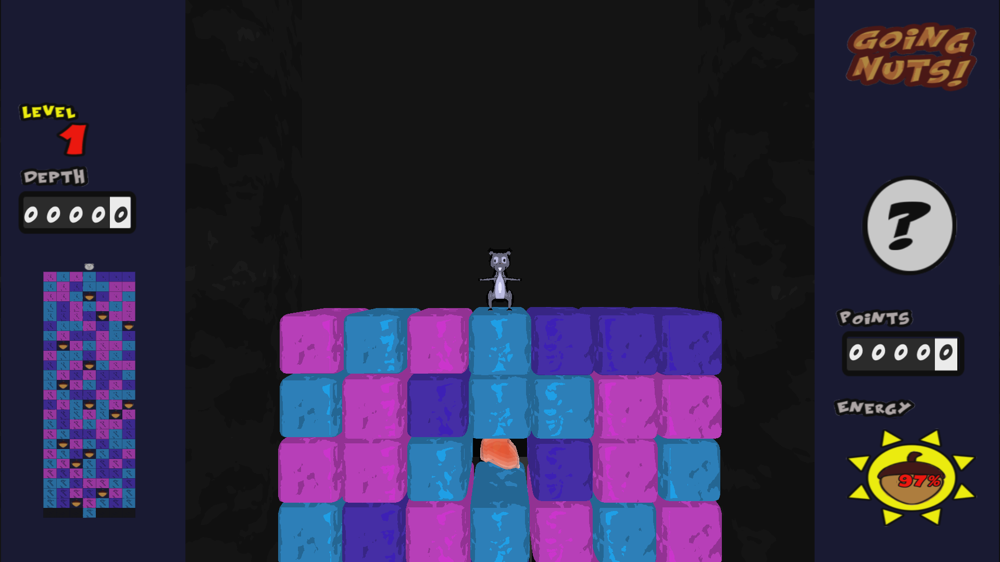
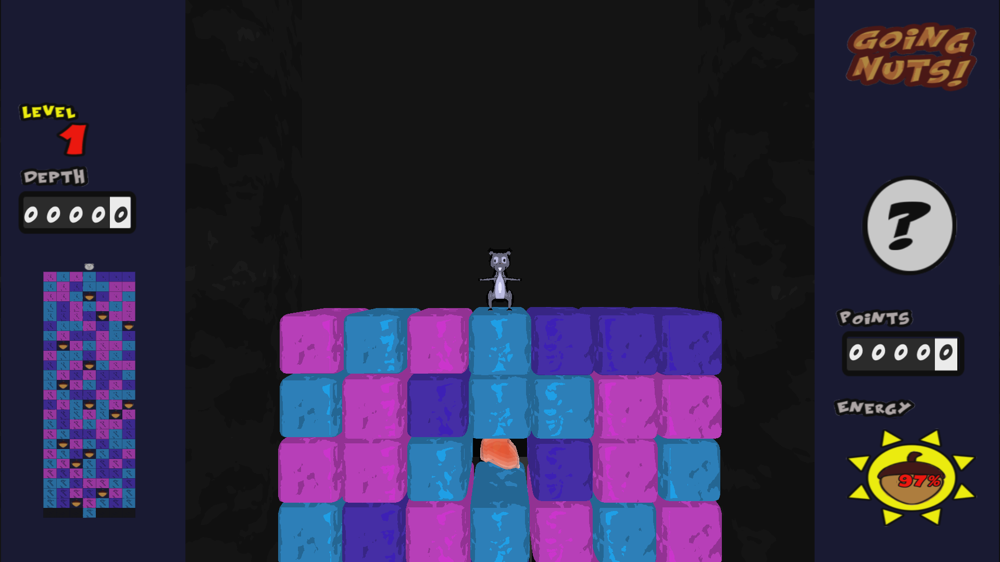

by Brent Williams, Drew Schulz, Andy Tsao, Adam Spurgin, Justin Fujikawa, and Zachary Glazer
Going Nuts! is a 3D, arcade style game where nuts rule. It is fast paced, and include a bunch of powerups that make the game addicting to the core!
You can download our game here or from our github here. To run the game you first need to compile the game by running make. To start the game run the file DeexNuts.
The game requires you have the following libraries installed:
- FMOD
- ASSIMP
- GLFW
- SOIL
- GLEW
Thanks for looking at our game. Now Go Nuts!